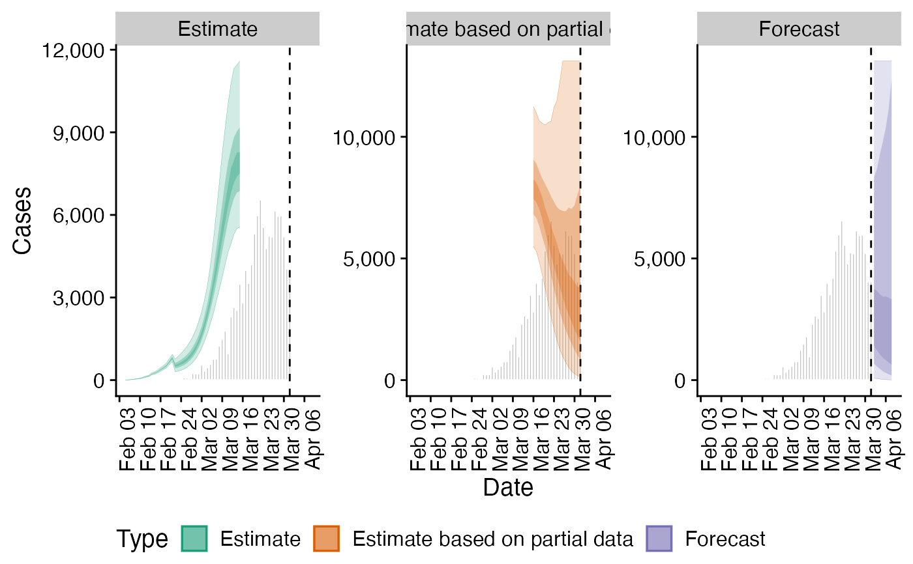
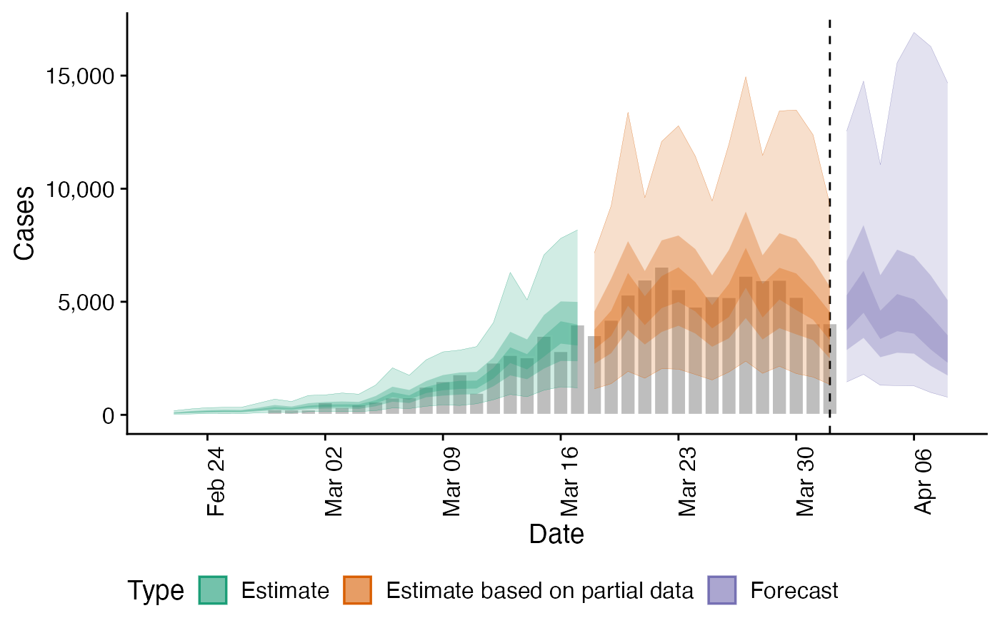
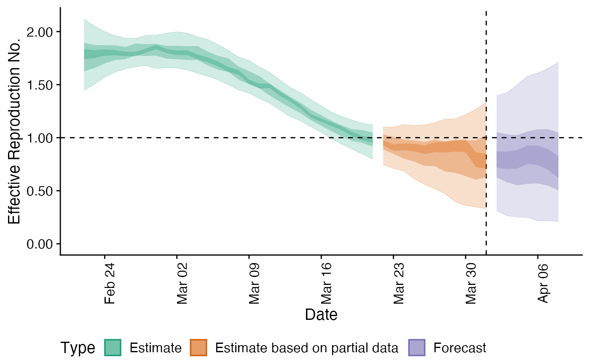

Plot Estimates
plot_estimates.Rd Allows users to plot the output from
Allows users to plot the output from estimate_infections easily. In future releases it
may be depreciated in favour of increasing the functionality of the S3 plot methods.
plot_estimates( estimate, reported, ylab = "Cases", hline, obs_as_col = TRUE, max_plot = 10 )
Arguments
| estimate | A data.table of estimates containing the following variables: date, type (must contain "estimate", "estimate based on partial data" and optionally "forecast"), |
|---|---|
| reported | A data.table of reported cases with the following variables: date, confirm. |
| ylab | Character string, defaulting to "Cases". Title for the plot y axis. |
| hline | Numeric, if supplied gives the horizontal intercept for a indicator line. |
| obs_as_col | Logical, defaults to |
| max_plot | Numeric, defaults to 10. A multiplicative upper bound on the number of cases shown on the plot. Based on the maximum number of reported cases. |
Value
A ggplot2 object
Examples
# \donttest{ # define example cases cases <- example_confirmed[1:40] # set up example delays generation_time <- get_generation_time(disease = "SARS-CoV-2", source = "ganyani") incubation_period <- get_incubation_period(disease = "SARS-CoV-2", source = "lauer") reporting_delay <- estimate_delay(rlnorm(100, log(6), 1), max_value = 10) # run model out <- estimate_infections(cases, generation_time = generation_time, delays = delay_opts(incubation_period, reporting_delay)) # plot infections plot_estimates( estimate = out$summarised[variable == "infections"], reported = cases, ylab = "Cases", max_plot = 2) + ggplot2::facet_wrap(~type, scales = "free_y")# plot reported cases estimated via Rt plot_estimates(estimate = out$summarised[variable == "reported_cases"], reported = cases, ylab = "Cases")# plot Rt estimates plot_estimates(estimate = out$summarised[variable == "R"], ylab = "Effective Reproduction No.", hline = 1)# }